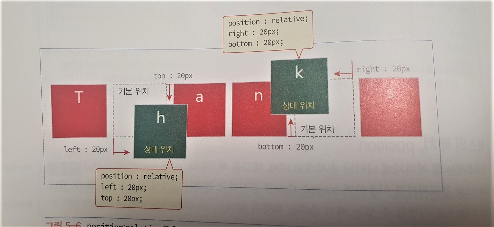

박스의 배치 position
브라우저는 웹 페이지에 나타난 순서대로 HTML 태그를 배치한다.
이를 normal flow라고 한다.
position 프로퍼티를 이요하면 이를 무시하고 원하는 위치에 박스를 배치할 수 있다.
- 정적 배치 - position : static (디폴트)
- 상대 배치 - position : relative
- 절대 배치 - position : absolute
- 고정 배치 - position : fixed
- 유동 배치 - float : left 혹은 right
정적 배치 position : static
정적 배치는 웹 페이지가 작성된 순서대로 HTML 태그의 출력 위치를 정하는 방식이다.
그러므로 정적 배치에서 left, top, bottom, right 프로퍼티의 값은 위치에 영향을 주지 않는다. = 배치 불가능
상대 배치 position : relative
normal flow에 따라 HTML 태그가 출력되는 위치를 기본 위치라고 한다.
relative 스타일이 주어지면 태그는 '기본위치'에서 left, top, bottom, right 프로퍼티 값만큼 이동한 상대 위치에 배치된다.

상대 배치된 HTML 태그는 다른 태그의 위치에 영향을 주지 않는다.